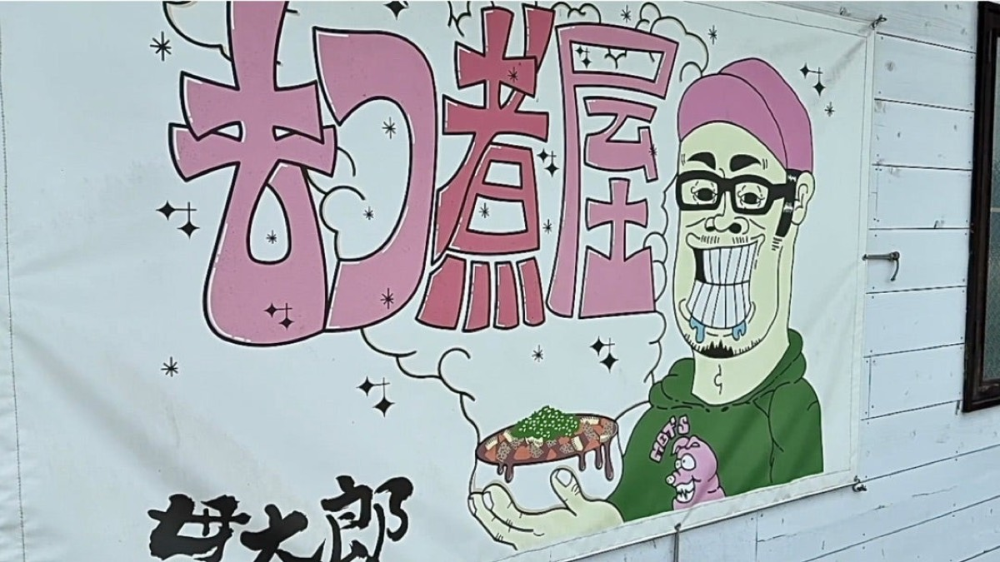

THE NAME
なぜこの店は “貫太郎” なのか
『貫太郎』という名前は、昭和の終戦を決断した総理大臣——鈴木貫太郎からいただきました。
時代の空気に逆らうように、命をかけて「戦争を終わらせる」と決めた人。誰よりも静かで、誰よりも強かった男。
店を始めるとき、自分の人生が大きく揺れていました。何を信じればいいのか、何を守ればいいのかも、分からなくなっていた。
それでも——「まっすぐに、自分の信じた道を貫こう」そう思ったとき、頭に浮かんだのが、この名前でした。
千葉県関宿町にある鈴木貫太郎のお墓に手を合わせ、心の中で誓いました。「俺も、貫きたいものがあります。どうか力を貸してください。」
それが、『もつ煮屋 貫太郎』の始まりです。この名前に恥じないように。今日も、一杯一杯に想いを込めて。
もつ煮屋 貫太郎 相良 淳
